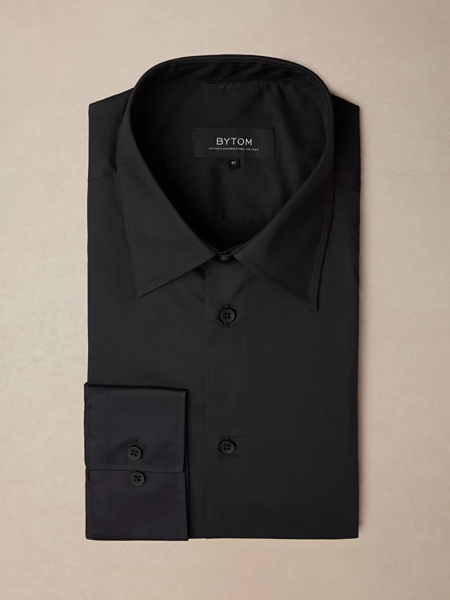
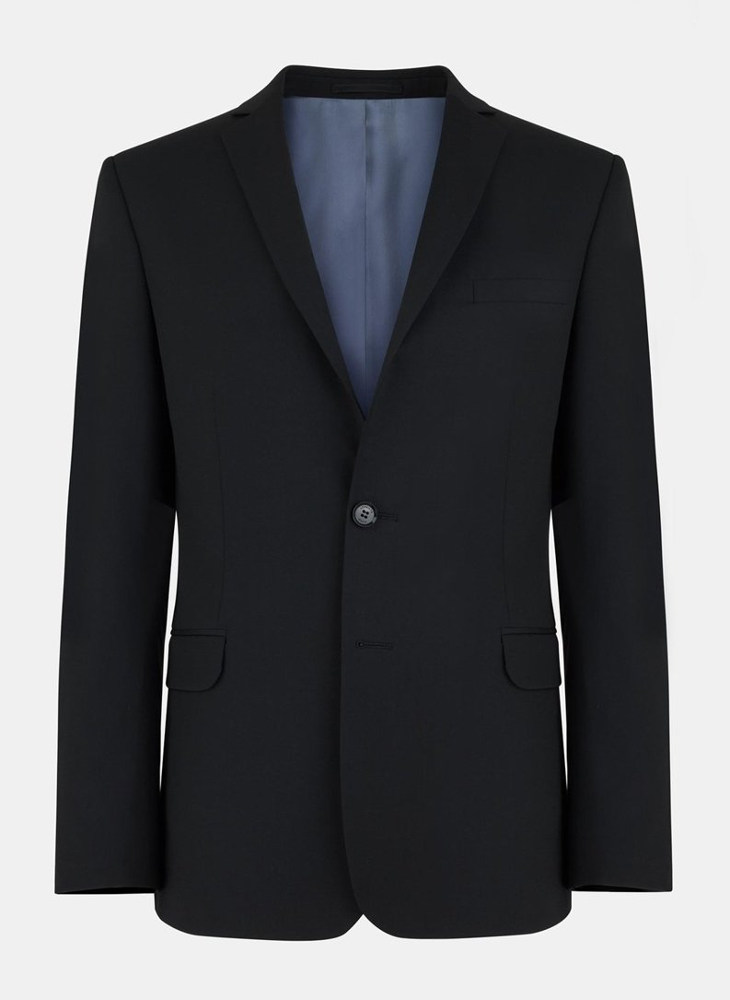

Strój uczniowski
Według mnie strój uczniowski w ŚLTZN jest odpowiedni - Dobrze przedstawia wysoki poziom szkoły. Jednakże, mogłyby zostać wprodzadzone małe zmiany. Aktualnie strój jest dosyć restrykcyjny w obszarach w których nie jest to potrzebne.
Kolory, wzory
Aktualnie wymagany jest granatowy garnitur, błekitna lub jasnoniebieska (lub biała) koszula bez wzorów, granatowy krawat (również bez wzorów) oraz czarne buty i skarpety.
Według mnie te zasady powinny być trochę złagodnione. Uważam, że koszule i krawaty ze wzorami powinny być dozwolone jeżeli te wzory nie rzucają się w oczy i nie są kolorowe. Podobnie jest z kolorami samego stroju -
Według mnie czarny garnitur, koszula i krawat mogłyby być dobrym dodatkiem do stroju uczniowskiego.
